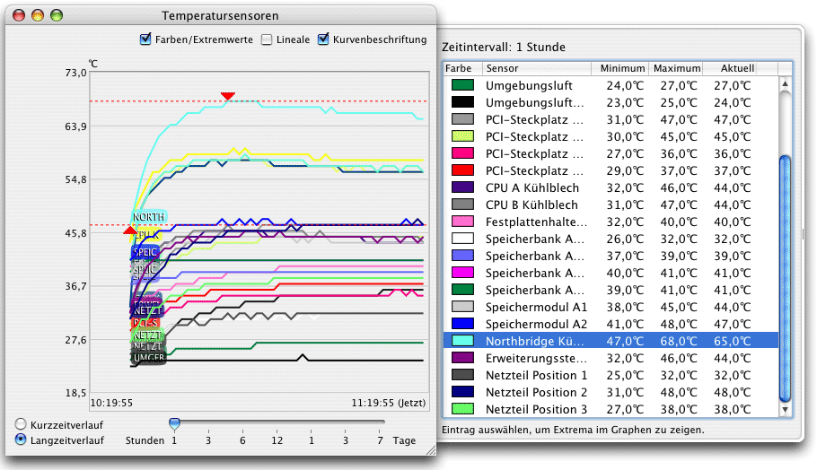

Anzeige von Extremwerten |
Das Programm kann Extremwerte anzeigen, d.h. Minimum- und Maximummessungen für einen wählbaren Zeitraum in der Vergangenheit. Die Werte werden auf Basis der Langzeitverlaufsdaten berechnet. Um die Werte anzuzeigen, wählen Sie den Menüpunkt Fenster > Extremwerte einblenden oder betätigen Sie die Tastenkombination ⌘+6.
Das Zeitintervall kann über den Schieberegler oben am Fenster ausgewählt werden. Einstellungen zwischen einer Stunde und einer Woche sind möglich.
Sie können auch ein Verlaufsfenster, das Sie definiert haben, zur Anzeige von Extremwerten verwenden. Auf diese Weise können Sie zusätzlich die Extrema in der Verlaufskurve aufspüren und sichtbar machen. Es ist außerdem möglich, den Kurzzeitverlauf auszuwählen, nicht nur die Langzeitdaten.
Minimum- und Maximumwert des ausgewählten Sensors werden mit roten Pfeilen in der Verlaufskurve markiert. Sie können die Lineale einschalten, um zusätzlich die Zeit anzuzeigen, oder die Kurvenbeschriftung, um bestimmte Kurven zu identifizieren. Um die Extremwertmarkierungen zu entfernen, schließen Sie das Schubfach durch Löschen des Hakens bei Farben/Extremwerte.
